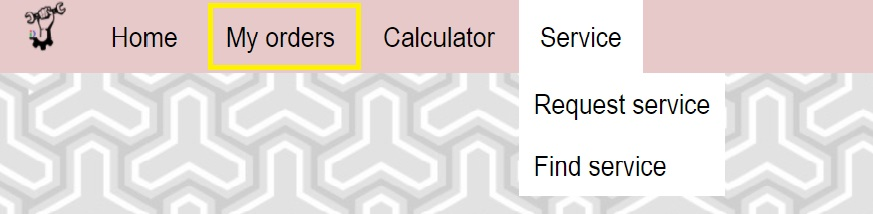
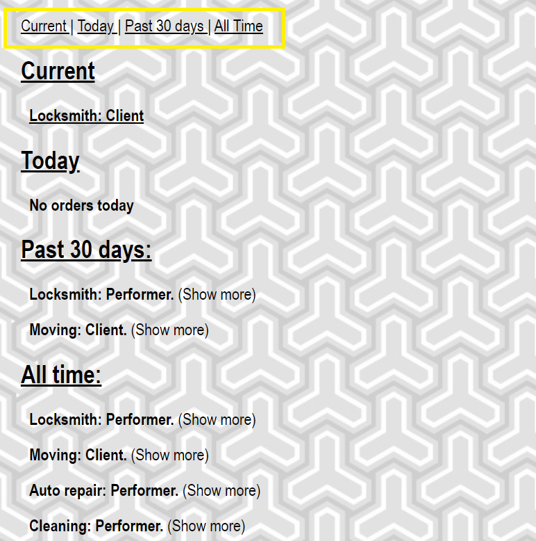

Once you are logged into your account, you can view current and past orders.
To access this menu, you must click on the "My orders" button in the upper left corner.

Above is the navigation menu. You can click on them.

You can see the details of both your current order(s) and the past orders.
To do this, you need to directly click on the order itself.